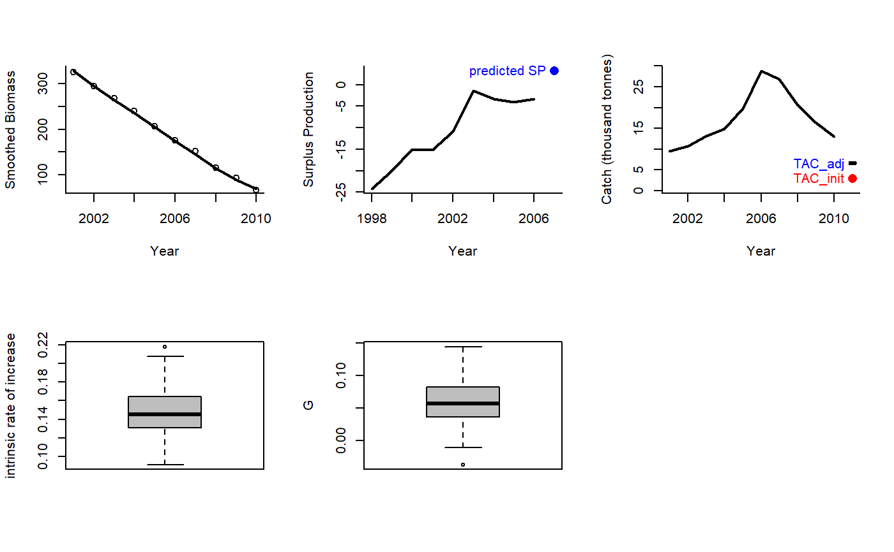
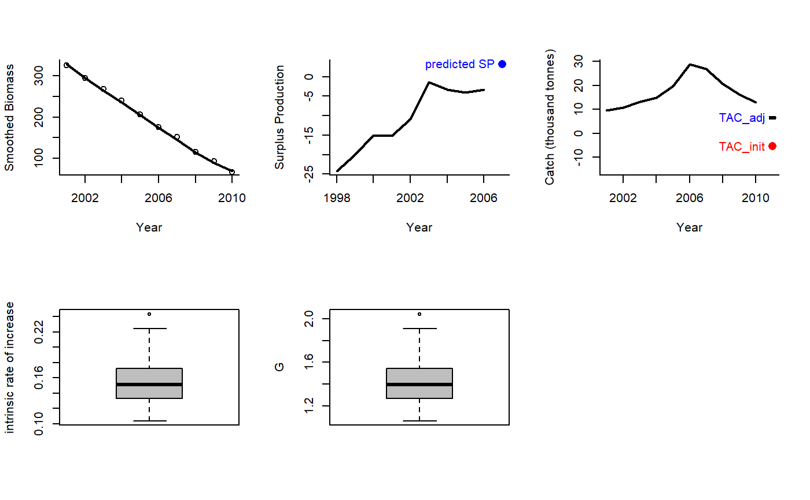

Rcontrol.RdAn MP proposed by Carl Walters that modifies the TAC according to trends in apparent surplus production that includes information from a demographically derived prior for intrinsic rate of increase
Rcontrol( x, Data, reps = 100, plot = FALSE, yrsmth = 10, gg = 2, glim = c(0.5, 2) ) Rcontrol2( x, Data, reps = 100, plot = FALSE, yrsmth = 10, gg = 2, glim = c(0.5, 2) )
| x | A position in the data object |
|---|---|
| Data | A data object |
| reps | The number of stochastic samples of the MP recommendation(s) |
| plot | Logical. Show the plot? |
| yrsmth | The number of years for smoothing catch and biomass data |
| gg | A gain parameters |
| glim | Limits for the change in TAC among years |
An object of class Rec with the TAC slot populated with a numeric vector of length reps
The TAC is calculated as:
$$\textrm{TAC} = \textrm{SP} (1-gG)$$
where \(g\) is a gain parameter, \(\textrm{SP}\) is estimated surplus production,
and \(G\) is:
For Rcontrol: \(G = r (1-2D)\) where \(r\) is the estimated intrinsic rate
of increase, and \(D\) is assumed depletion.
For Rcontrol2: \(G = r - 2bB_\textrm{hist}\) where \(B_\textrm{hist}\)
is the smoothed biomass overlast yrsmth years and:
$$b = \sum{\frac{\textrm{SP}}{B_\textrm{hist}} - r} \frac{\sum{B_\textrm{hist}}}{\sum{B_\textrm{hist}^2}} $$.
The TAC is subject to conditions limit the maximum change from the smoothed catch
over the last yrsmth years by the glim argument, e.g, default values of glim = c(0.5, 2)
means that maximum decrease in TAC is 50% of average catch and maximum increase
is 2 x average catch.
Rcontrol: Base version Rcontrol
Rcontrol2: This is different from
Rcontrol because it includes a quadratic approximation of recent trend in
surplus production given biomass
See Data for information on the Data object
Rcontrol: Abun, Cat, Dep, FMSY_M, Ind, L50, MaxAge, Mort, steep, vbK, vbLinf, vbt0, wla, wlb, Year
See Online Documentation for correctly rendered equations
Made-up for this package.
#> TAC (median) #> 6.529254#> TAC (median) #> 6.529254